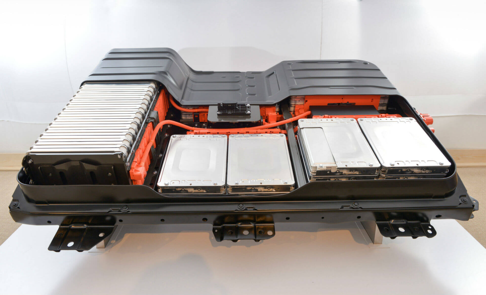
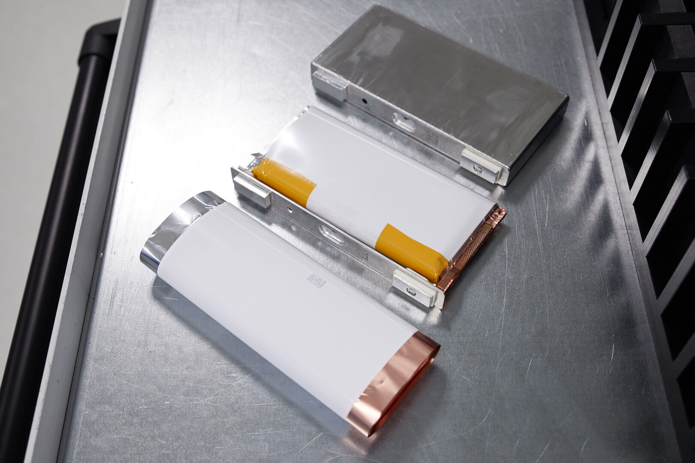
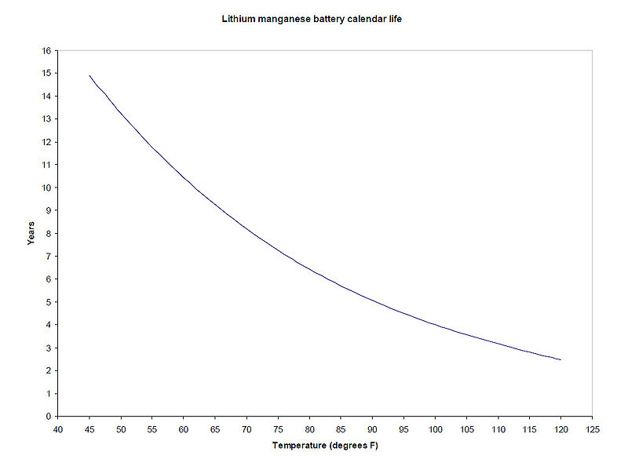
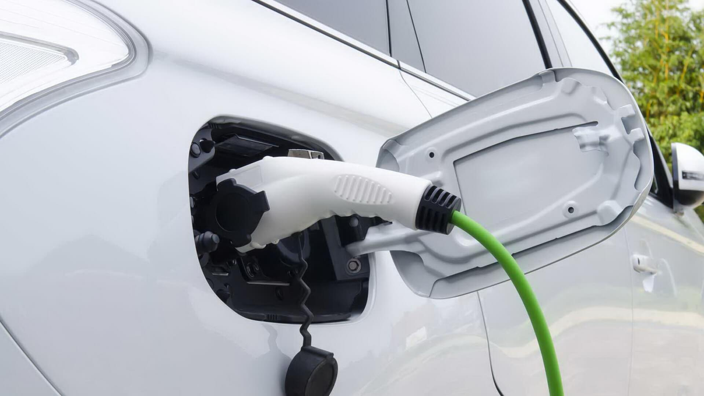
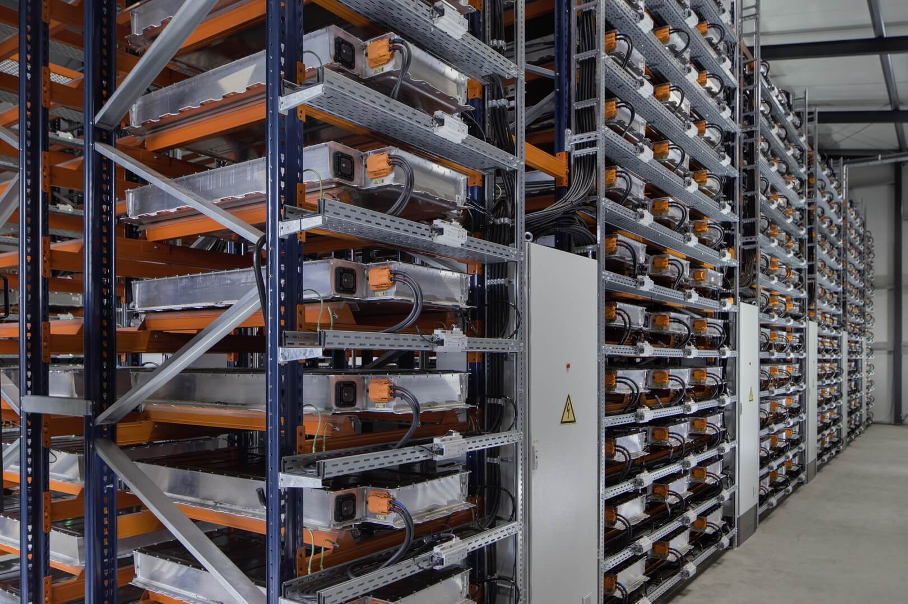

Для потенциального владельца, а также людей, которые
интересуются тенденциями развития экологичного транспорта первым пунктом
вызывающим интерес, являются аккумуляторные батареи электрокара.
Поскольку этот элемент в традиционном понимании автомобиля
олицетворяет топливный бак, следовательно, возникает множество аналогий
и вопросов. Какие существуют
аккумуляторные батареи? Сколько они заряжаются? Какова длительность
эксплуатации? Как их обслуживать? Сколько стоят и какие
производители лучше? Что делать с подержанными АКБ далее?
Для полноты восприятия механизма работы аккумуляторных батарей
их различий, достоинств и недостатков, в данной статье
попробуем рассмотреть все основные характеристики.

Аккумуляторная батарея Chevrolet Bolt EV © media.gm.com
В современном производстве электромобилей, чаще всего используют литий-ионные батареи. Средний период эксплуатации таких аккумуляторов составляет порядка 8 лет, что подтверждают сами производители АКБ.
Определяющей характеристикой для литий-ионных батарей, является возраст
и число циклов зарядов батареи, то есть сколько раз данную
батарею можно заряжать в период эксплуатации. Среднее число полных
«зарядок» современных аккумуляторных батарей для электромобилей
составляет несколько тысяч циклов.
Кроме этого важную роль играет корректная эксплуатация АКБ, которая включает:
- правильную зарядку и разрядку батареи;
- разумную эксплуатацию в зимний период;
- грамотный расчет производительности;
- температурный режим использования;
- использование ПО для определения состояния батарей, к примеру Leaf Spy Pro, которая показывает, какие ячейки аккумуляторов Nissan Leaf битые, а какие живые.
Большинство литий-ионных аккумуляторов работает на графитных электродах кобальтатов лития с напряжением в 36В и продуцируемой мощностью 15 кВт. Также существуют литиевые источники питания, которые различаются по внутренним компонентам на такие типы:
- Никель-кобальт-марганцевые. Использование кобальта, который немного дороже марганца увеличивает термин эксплуатации батареи. Небольшим недостатком батарей, считается их чувствительность к высоким температурам.
- Никель-кобальт-алюминиевые. По своим параметрам схожи с п.1, но дешевле благодаря замене дорого марганца, алюминием.
- На основе сплава фосфат железа. Надежные и стабильные в эксплуатации, однако аккумуляторов такого типа требуется больше, поскольку они функционируют на пониженном напряжении.
Обслуживание и замена аккумуляторных батарей электромобиляОтметим, что предпочтение отдается литий-ионным источникам питания, ввиду их большей емкости и отдачи энергии. Именно они позиционируются, как главный тип аккумуляторных батарей для электромобилей.
Разумеется, заменить аккумуляторную батарею можно на любом
электромобиле. Однако, это далеко не так просто, как сменить
батарейки в пульте ДУ. Замена аккумуляторной батареи
в электрокаре скорее напоминает установку компьютерного
оборудования, когда кроме подключения «девайса» по разъемам
и шлейфам, необходимо установить еще и различные драйвера.
Тоже происходит и здесь, после установки аккумуляторной батареи она
должна пройти согласование и регистрацию с помощью программы
бортового компьютера. Поэтому быстро снять аккумулятор с одного
авто и установить на другой не выйдет. Процедура требует
определенного обслуживания.
Замена аккумулятора электрокара производится в случае падения его
емкости, из-за чего существенно сокращается запас хода и как
результат эффективность использования электромобиля.

Аккумуляторная батарея самого популярного электромобиля в Украине Nissan Leaf © newsroom.nissan-europe.com
Механические повреждения АКБ электромобилей, если не учитывать ДТП, довольно редкое явление, которое требует индивидуального решения от замены аккумулятора до полной реорганизации системы.
Отдельно стоит отметить, что современные АКБ электромобилей можно менять блоками, то есть только «битые» ячейки, которые перестали работать. Это существенно удешевляет эксплуатацию электромобилей и упрощает ремонт системы.
Что касается расчета емкости аккумуляторных батарей, то серьезно задумываться над их заменой нужно только после 8 лет эксплуатации, когда запас хода начинает уменьшаться на 20-30% ежегодно. До этого процесс «старения» и уменьшения емкости батарей меняется в зависимости от индивидуальных особенностей модели, а также придерживания правил корректной эксплуатации. Таким образом, даже с б/у аккумулятором, самый популярный в Украине электрокар Nissan Leaf способен проезжать 100-120 километров от начальных 160.

Ячейки аккумуляторных батарей BMW © press.bmwgroup.com
В большинстве своем в батареях используется литий-марганцевый катод, который собственно и обеспечивает весь функционал батареи, однако он является чувствительным к теплу и отличается ускоренным разрушением и потерей мощности при увеличивающейся температуре.
Существует два источника потери емкости аккумулятора: календарная и эксплуатационная.
Календарная потеря емкости — это потеря с течением времени, а эксплуатационная связана с зарядкой и разрядкой аккумулятора.
Эксплуатационные потери зависят от максимального уровня заряда
и от глубины разряда, разница между которыми представляет
собой процент от общего диапазона мощности, который используется
во время цикла.
Технически срок службы батареи состоит их четырех переменных:
- средняя температура;
- стандартное отклонение температуры;
- среднее состояние заряда;
- стандартное отклонение заряда.
Согласно этим критериям кривая потери емкости аккумуляторных батарей с течением времени выглядит следующим образом:

Кривая потери емкости аккумуляторных батарей с течением времени © electricvehiclewiki.com
Если объяснять более доступным языком на конкретном примере, то наиболее оптимальным режимом зарядки батареи Nissan Leaf, в соответствии указанных переменных будет: первые 150 циклов — 6 кВт, последующие циклы 10-12 кВт. Это лучший из вариантов, который минимизирует прежде всего эксплуатационные потери мощности.
Время и способ зарядки аккумуляторных батарей электромобилей
Зарядка электромобиля
На сегодняшний день существует 4 способа зарядки электрокаров:
- Использование бытовых электросетей в 220 В. Самый популярный способ зарядки, который согласно статистике использует 90% владельцев электромобилей.
- Зарядка с использованием переменного тока с защитой внутри кабеля для подзарядки, входящего в комплектацию автомобиля.
- Зарядка от однофазной или трехфазной электросети АЗС с применением специального разъема кабеля.
- Зарядка электромобиля от специальных электрических заправочных станций быстрым током.
Несмотря на то, что большинство владельцев электромобилей в Украине хотели бы иметь собственный гараж и зарядную станцию, электрокары это преимущественно городские авто чьи владельцы зачастую ограничены лишь парковочным местом на стоянке или во дворе. Это не слишком большой недостаток, поскольку крупные города уже обладают достаточно разветвленной инфраструктурой электрических АЗС, тем не менее, на зарядку АКБ до 80% показателей, придется потратить от 30 минут до одного часа.
Стоимость аккумуляторных батарей для электромобилей, производители и перспективы рынкаНа текущий момент, если ориентироваться на самый доступный электрокар Украины Nissan Leaf и на главный эталон отрасли Tesla Model S, то первый оснащается батареями собственного производства, а основным поставщиком аккумуляторных батарей для Tesla является компания Panasonic, также стоит отметить батареи производства LG, которыми оснащается популярный Chevrolet Bolt.
Работают над улучшением аккумуляторов и другие автопроизводители, к примеру, недавно новую твердотельную батарею с запасом хода 800 км разработала компания Fisker, а корейский концерн Samsung представил на Франкфуртском автосалоне свои многофункциональные аккумуляторные батареи.
В число других востребованных производителей аккумуляторных батарей
для электромобилей входят швейцарская компания MES DEA, Beta
Research&Development Ltd из Британии, греческая фирма Sunlight,
немецкая VARTA. Особого внимания заслуживает анонсированный
на 2025 год запуск крупнейшего в мире завода
по производству аккумуляторных батарей от компании TESLA.
Также, пока еще на уровне стартапов существует несколько компаний,
которые работают над усовершенствованием АКБ для электромобилей.
Серьезные успехи в этом направлении демонстрируют:
- британская компания SuperCapacitor Materials — занятая разработкой конденсаторов способных заменить традиционные аккумуляторы;
- компания Phinergy — разрабатывающая прототип металло-воздушного аккумулятора;
- стартап из Австрии Kreisel Electric — занятый оптимизацией и улучшением эргономики АКБ.
Так что в ближайшем будущем мы можем вполне можем рассчитывать на кардинальное изменение аккумуляторных систем электромобилей и их способа подзарядки.
Что делать с использованным аккумулятором?Видятся разные перспективы, одна из которых утилизация АКБ. Но тут возникает вопрос: утилизация — это фактическое уничтожение дорогостоящего комплектующего, которое уже не годится для электромобиля, но еще вполне подлежит использованию в менее требовательной сфере, как же можно еще использовать оставшийся ресурс батарей?
Ведущие производители электрокаров предлагают первоначальную альтернативу утилизации: использование подержанных АКБ в бытовых системах накопления энергии от альтернативных источников. То есть использовать бывшие батареи электромобилей в качестве аккумуляторов для накопления энергии, вырабатываемой солнечными батареями и ветряными генераторами. К слову, идея не нова, ведь Tesla давно производит комплексы АКБ никак не связанные с электрокарами, а выпускаемые для альтернативной энергии солнечных панелей.
Если применить этот опыт в Украине, можно рассчитывать на то, что продажа б/у электромобильных батарей в Украине способна превратиться в бизнес. Альтернативная энергетика в Украине развивается и если эффективность подобного использования батарей будет доказана или реализована отдельными «энтузиастами», то владельцы электромобилей смогут продавать подержанные батареи пользователям «зеленого тарифа» за вполне приемлемые деньги.

Хранение бывших в употреблении аккумуляторов BMW i3 © press.bmwgroup.com
Еще одним вариантом, который уже начали воплощать некоторые компании — это строительство заводов для хранения, переработки и ремонта бывших в употреблении аккумуляторов, пока такой проект реализован концерном BMW, но в скором времени ожидается открытие подобного предприятия компании Renault.
Автор: hevcars.com.ua
По материалам сайта : https://hevcars.com.ua/